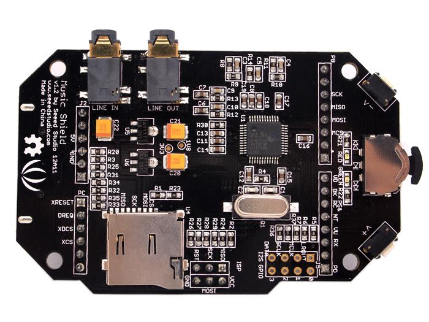
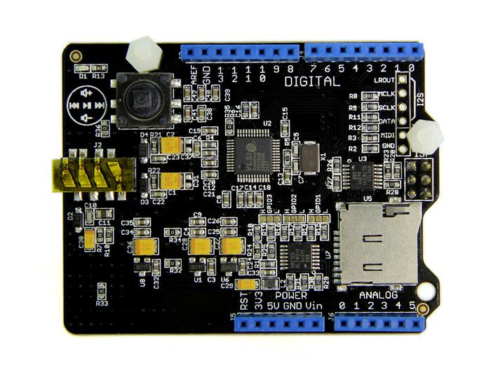

The Music Shield is a professional audio codec.It can work with Arduino, Seeeduino, Seeeduino Mega and Arduino Mega. It is based on VS1053b IC, and can play a variety of music formats stored on MicroSD cards with the Seeed provided Arduino Library.
There are two versions for you to choose:
|  |  | |
Here lists the comparison among various versions of Music Shield:
| Parameter | Music Shield V1.0 | Music Shield V2.0 | Music Shield V2.2 |
|---|---|---|---|
| Voltage | +5V | +5V | +5V |
| Audio Interface | 3.5mm Audio Jack | 3.5mm headphone jack | 3.5mm headphone jack |
| Supported SD Card |
Micro SD Card |
Micro SD Card |
Micro SD Card |
| Standard Shield | No | Yes | Yes |
| Supported music format | MP3,WAV,MIDI,Ogg Vorbis | MP3,WAV,MIDI,Ogg Vorbis | MP3,WAV,MIDI,Ogg Vorbis |
| Compatibility | Arduino,Seeeduino, Arduino Mega, and Seeeduino Mega | Arduino,Seeeduino, Arduino Mega, and Seeeduino Mega | Arduino,Seeeduino, Arduino Mega, and Seeeduino Mega |
| Recording function | only Seeeduino Mega and Arduino Mega support | only Seeeduino Mega and Arduino Mega support | only Seeeduino Mega and Arduino Mega support |
| MIDI Function | do not support | support | support |
| Control Volume and Select songs | 2 control-push buttons and 1 knob switch | a Multifunction button | a Multifunction button |
| Library File | library for Music shield V1.0 | library for Music shield V2.0 | library for Music shield V2.2 |